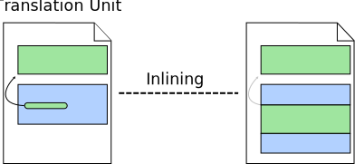
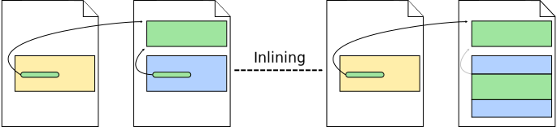
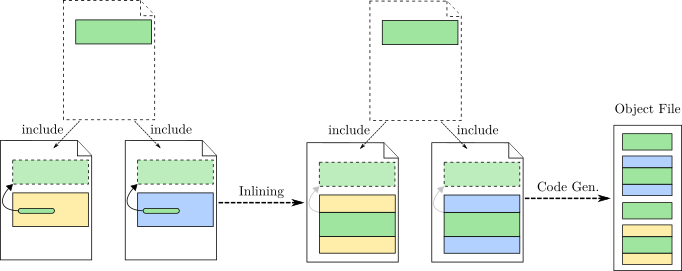

TL;DR
The
inlinekeyword does not guarantee the function will actually be inlined.Quick Practical Tips:
- Use a header file with declarations and have these functions defined only once in an implementation file.
- If distinct functions must have the same name in different implementation files, use the
statickeyword in each local definition.- Do not use the
inlinekeyword.- Use link-time optimisation (
-fltoflag).
Traditionally, compilers operate on a single translation unit at a time, i.e., a single source file and its expanded headers. Each translation unit is compiled into an object file, and then the linker is responsible for combining multiple object files into a single binary. Optimisations are then applied within each translation unit during compilation. See the figure below:
Most of the classic optimisations are applied within the scope of a single function. These optimisations are not affected by changes in the translation unit external to the function itself. However, some optimisations are inter-procedural, such as function inlining. These inter-procedural optimisations are heavily affected by how many functions are available in a single translation unit. Ideally, all functions would be in a single translation unit, as we will see later when talking about link-time optimisation. In general, compiler optimisations benefit from having larger context, simply because more code offers more opportunities for improvement or more information that the compiler can use to prove certain properties of the code, allowing the compiler to transform the code without changing its semantics.
The figure below illustrates how function inlining works. Each coloured box represents a function and the black arrow a function call. When applying inline to a particular call-site, the call is replaced by a copy of the function body with the formal parameters being replaced by the corresponding actual arguments. The original callee function continues to exists unaltered. When inlining, the compiler must have access simultaneously to the both the caller function and the function being called (i.e., the callee). That is, the inliner benefits greatly from having the code of more functions at its disposal.

However, in most real programs, a function defined in one implementation file (translation unit) will be used in several other files. The figure below illustrates one such scenario. Because optimization is applied to one compilation unit at a time, the compiler is only able to inline a function call when the callee function is present in the same translation unit. In the remaining cases, the compiler is unable to inline a function call as it does not have access to the definition of the function being called as it is defined in a different translation unit.

A programmer can manually resolve that by copying the function definition to multiple implementation files where it is used. However, the compiler would normally raise a compilation error due to multiple definitions. Consider the example below:
file1.c
void foo() {}
void bar() { foo(); }file2.c
void foo() {}
void baz() { foo(); }main.c
int main() { return 0; }If we compile these files with the command clang *.c -o main, we get the following error message:
/tmp/file2-d2d43e.o: In function `foo':
file2.c:(.text+0x0): multiple definition of `foo'
/tmp/file1-c68965.o:file1.c:(.text+0x0): first defined hereThis error is detected during link time. Once each object file has been created by the back-end, the linker is responsible for combining all of them into a single executable. During this process, the linker identifies that there are multiple definitions of an external symbol, that is, the object files have conflicting symbols. At this point, the previous error is raised.
One way the programmer can avoid that is by defining the copies of the function as having a local linkage by using the static keyword. That is, the copies will be only internal to their files, avoiding the previous conflict between external symbols. The example below can be compiled without any problem:
file1.c
void foo() {}
void bar() { foo(); }file2.c
static void foo() {} //changed to 'static'
void baz() { foo(); }main.c
int main() { return 0; }
file1.c
int foo(int a, int b) { return a*b; }
int bar(int a, int b) { return foo(a,b); }file2.c
static int foo(int a, int b) { return a*b; }
int apply(int (*f)(int,int), int b);
int baz(int a, int b) { return foo(a,b) + apply(foo, b); }main.c
int apply(int (*f)(int,int), int b) { return f(b,b); }
int main() { return 0; }clang *.c -O2 -finline -o main
llvm-objdump -D -print-imm-hex -no-show-raw-insn -x86-asm-syntax=intel main
foo:
400480: imul edi, esi
400483: mov eax, edi
400485: ret
400486: nop word ptr cs:[rax + rax]
bar:
400490: imul edi, esi ; inlined call to foo
400493: mov eax, edi
400495: ret
400496: nop word ptr cs:[rax + rax]
baz:
4004a0: push rbx
4004a1: mov ebx, edi
4004a3: imul ebx, esi ; inlined call to foo
4004a6: mov edi, 0x4004c0 ; points to foo copy at 0x4004c0
4004ab: call 0x20 <apply>
4004b0: add eax, ebx
4004b2: pop rbx
4004b3: ret
4004b4: nop word ptr cs:[rax + rax]
foo:
4004c0: imul edi, esi
4004c3: mov eax, edi
4004c5: ret
4004c6: nop word ptr cs:[rax + rax]
apply:
4004d0: mov rax, rdi
4004d3: mov edi, esi
4004d5: jmp rax
4004d7: nop word ptr [rax + rax]
main:
4004e0: xor eax, eax
4004e2: ret
4004e3: nop word ptr cs:[rax + rax]
4004ed: nop dword ptr [rax]as shown below
file1.c
int foo(int a, int b) { return a*b; }
int bar(int a, int b) { return foo(a,b); }file2.c
inline int foo(int a, int b) { return a*b; } // changed to 'inline'
int apply(int (*f)(int,int), int b);
int baz(int a, int b) { return foo(a,b) + apply(foo, b); }main.c
int apply(int (*f)(int,int), int b) { return f(b,b); }
int main() { return 0; }foo:
400480: imul edi, esi
400483: mov eax, edi
400485: ret
400486: nop word ptr cs:[rax + rax]
bar:
400490: imul edi, esi ; inlined call to foo
400493: mov eax, edi
400495: ret
400496: nop word ptr cs:[rax + rax]
baz:
4004a0: push rbx
4004a1: mov ebx, edi
4004a3: imul ebx, esi ; inlined call to foo
4004a6: mov edi, 0x400480 ; points to unique foo
4004ab: call 0x10 <apply>
4004b0: add eax, ebx
4004b2: pop rbx
4004b3: ret
4004b4: nop word ptr cs:[rax + rax]
4004be: nop
apply:
4004c0: mov rax, rdi
4004c3: mov edi, esi
4004c5: jmp rax
4004c7: nop word ptr [rax + rax]
main:
4004d0: xor eax, eax
4004d2: ret
4004d3: nop word ptr cs:[rax + rax]
4004dd: nop dword ptr [rax]
The inline specifier is a hint to the compiler that it should attempt to generate code for a call of fac() inline rather than laying down the code for the function once and then calling through the usual function call mechanism.
To make inlining possible in the absence of unusually clever compilation and linking facilities, the definition – and not just the declaration – of an inline function must be in scope (§15.2). An inline specifier does not affect the semantics of a function. In particular, an inline function still has a unique address, and so do static variables (§12.1.8) of an inline function. If an inline function is defined in more than one translation unit (e.g., typically because it was defined in a header; §15.2.2), its definition in the different translation units must be identical.
An inline function (§12.1.3, §16.2.8) must be defined identically in every translation unit in which it is used (§15.2.3). Consequently, the following example isn’t just bad taste; it is illegal: // file1.cpp: inline int f(int i) { return i; } // file2.cpp: inline int f(int i) { return i+1; }
We keep inline function definitions consistent by using header files.
talk about inlining, optimisation per compilation unit and how the inline keyword addresses this problem.
talk about hand-optimizing programs.
specialist programmer vs average programmer.
https://www.quora.com/Are-compilers-really-better-than-human-at-code-optimisation
then talk about link-time optimisation.
practi
File: user1.c
#include <stdio.h>
inline void foo() {
printf("This is the foo function.\n");
}
int fooUser1() {
foo();
return 1;
}File: user2.c
#include <stdio.h>
inline void foo() {
printf("This is the foo function.\n");
}
int fooUser2() {
foo();
foo();
return 2;
}File: main.c
#include <stdio.h>
void foo() {
printf("This is the foo function.\n");
}
int fooUser1();
int fooUser2();
int main() {
fooUser1();
fooUser2();
return 0;
}Opinion:
- The
statickeyword should have been calledinternal.- The
inlinekeyword was a poorly designed feature with a bad name, though it was driven by practical limitations at the time.
inline
inlinehint and available_externally linkage.
inline static
inlinehint and internal linkage.
static
only internal linkage.
inline
inlinehint and linkonce_odr linkage.
static
inlinehint and internal linkage.